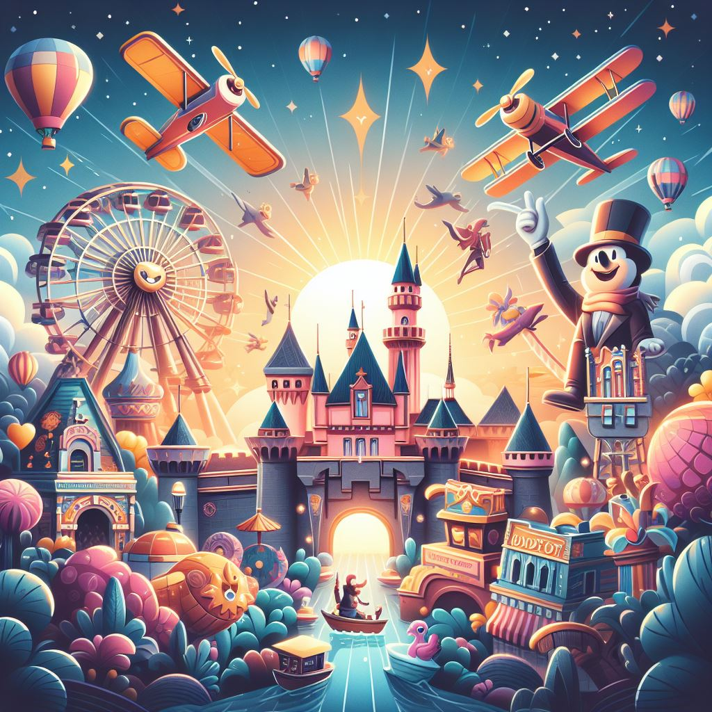

Walt Disney World® Resort
Votre guide ultime pour découvrir les parcs d'attractions du monde entier !
Grâce à notre base de données complète, vous pouvez explorer une multitude de parcs, découvrir leurs attractions phares, leurs horaires, leurs tarifs et bien plus encore. Que vous soyez un aventurier à la recherche de sensations fortes ou une famille en quête d'une sortie divertissante, The Park Database est votre compagnon de voyage idéal dans le monde merveilleux des parcs d'attractions.
Rejoignez-nous dans cette aventure passionnante et commencez à planifier vos prochaines escapades magiques avec ParkReference !
